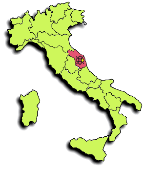
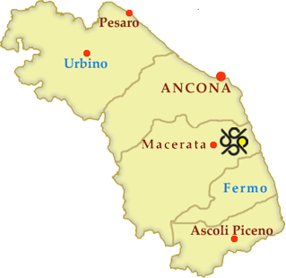

Percorso dall’autostrada A14 (Strada E55)
Uscita autostrada al casello Porto Recanati - Loreto. Proseguire per circa 5,2 km sulla S.S. Adriatica n.16 in direzione “Civitanova Marche, Pescara”.
All’incrocio per Macerata girare a destra sulla S.P. Regina n.571 e proseguire per 9 km. Successivamente, all'incrocio per Montelupone, girare a sinistra in via Enrico Fermi (S.P. n.21) e continuare per 2,2 km.

Da questo punto troverai le indicazioni stradali dedicate “CGF di Pranzetti srl”.
All’incrocio per S. Firmano girare a destra in Contrada Peschiera (S.P. n.93) per 0,7 km. Infine, all’ultima indicazione della ditta, girare a sinistra: dopo 200 mt troverai la nostra sede sulla tua sinistra.